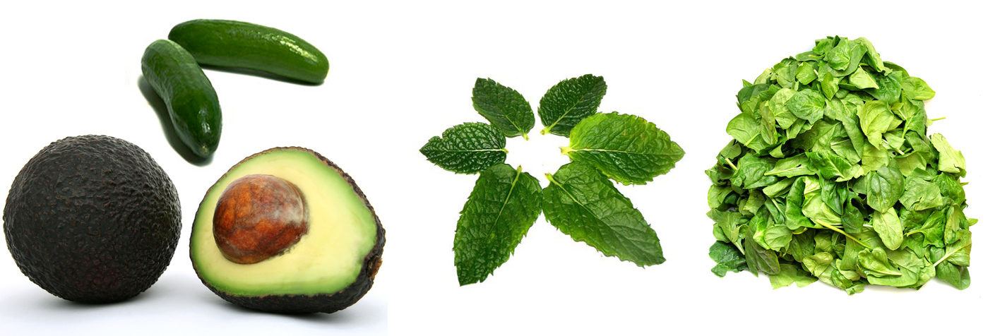
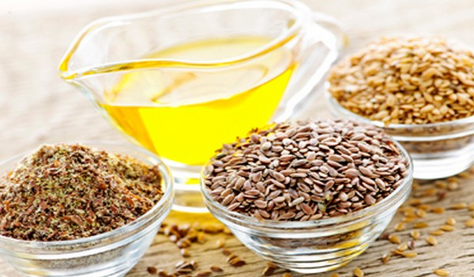

Even if you don't plan on doing a detox program, your health will benefit from adding more detox superfoods to your daily healthy lifestyle. There are many great superfoods with detoxifying properties, but here are my top 12 picks. And, they're delicious too.
 Almonds
Almonds are high in fiber, calcium, magnesium, and useable protein that helps stabilize blood sugar and remove impurities from the bowels.

Avocado lower cholesterol and dilate blood vessels while blocking artery-destroying toxicity. Avocados contain a nutrient called glutathione, which blocks at least 30 different carcinogens while helping the liver detoxify synthetic chemicals. Researchers at the University of Michigan found that elderly people who had high levels of glutathione were healthier and less likely to suffer from arthritis.
Beetscontain a unique mixture of natural plant chemicals (phytochemicals) and minerals that make them superb fighters of infection, blood purifiers, and liver cleansers. They also help boost the body's cellular intake of oxygen, making beets excellent overall body cleansers. Aphrodite, according to legend, ate beets to retain her beauty. She was definitely on to a good thing since beets, in addition to all the benefits listed above, also help stabilize the blood's acid-alkaline balance (pH), which in turn supports healthy detoxification.
Blueberrie contain natural aspirin that helps lessen the tissue-damaging effects of chronic inflammation, while lessening pain. Blueberries also act as antibiotics by blocking bacteria in the urinary tract, thereby helping to prevent infections. They have antiviral properties and are loaded with super-detoxifying phytonutrients called proanthocyanidins.
Cabbage contains numerous anti-cancer and antioxidant compounds and helps the liver break down excess hormones. Cabbage also cleanses the digestive tract and soothes the stomach, which could in part be due to its antibacterial and antiviral properties. Cruciferous vegetables like cabbage (kale is another excellent choice see below) demonstrate powerful detoxification activity, including neutralizing some of the damaging compounds found in cigarette smoke (and second-hand smoke). They also contain a compound that helps the liver produce adequate amounts of enzymes for detoxification.
Cranberries have powerful antibiotic and antiviral substances to help the body cleanse harmful bacteria and viruses from the urinary tract.

Flaxseeds and Flaxseed Oil are loaded with essential fatty acids, particularly theomega-3s. They are essential for many cleansing functions and maintaining a healthy immune system. They are also critical to maintaining a healthy brain. The health of every cell in your body is dependent on getting adequate amounts of essential fatty acids.
Garlic helps cleanse harmful bacteria, intestinal parasites, and viruses from the body, especially from the blood and intestines. It also helps cleanse buildup from the arteries and lowers blood pressure. Garlic has anti-cancer and antioxidant properties that help detoxify the body of harmful substances. It also helps cleanse the respiratory tract by expelling mucous buildup in the lungs and sinuses. I am referring to fresh garlic, not garlic powder, which has virtually none of the above properties.
Kale contains powerful anti-cancer and antioxidant compounds that help cleanse the body of harmful substances. It is also high in fiber, which helps cleanse the intestinal tract. Like cabbage, kale helps neutralize compounds found in cigarette smoke and contains a substance that jump-starts the liver's production of cleansing enzymes.
Legumes are loaded with fiber that helps lower cholesterol, cleanse the intestines, and regulate blood sugar levels. Legumes also help protect the body against cancer.
Lemons are superb liver detoxifiers. In addition, they contain high amounts of vitamin C, a vitamin needed by the body to make a substance called glutathione. Glutathione helps ensure that phase 2 liver detoxification keeps pace with phase 1, thereby reducing the likelihood of negative effects from environmental chemicals. Vitamin C and other antioxidants found in lemons are integral to ward off cancer, fight the effects of pollution and cell damage. Fresh lemon juice contains more than 20 anti-cancer compounds and helps balance the body's pH levels.
Seaweed could be the most underrated vegetable in the Western world. Studies at McGill University in Montreal showed that seaweeds bind to radioactive waste in the body so it can be removed. Radioactive waste can find its way into the body through some medical tests or through food that has been grown where water or soil is contaminated. Seaweed also binds to heavy metals to help eliminate them from the body. In addition, it is a powerhouse of minerals and trace minerals.
Credits to : care2